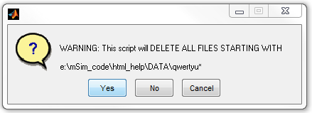
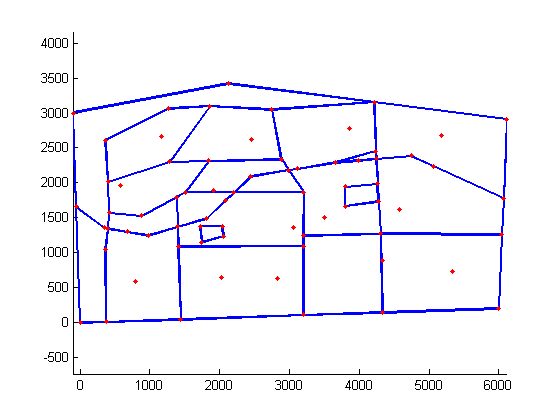
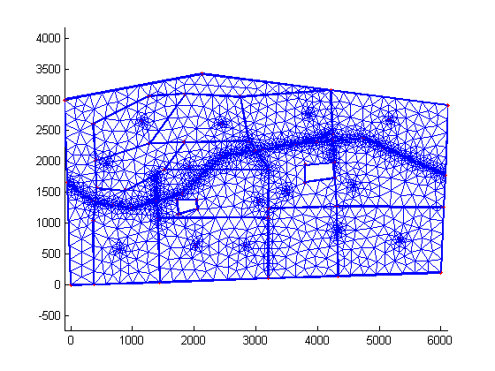

Create mesh using ARCGIS and Gmsh
| main | Tutorials | Functions | website |
In the previous example we explained how to create the Gmsh input file using the mSim Matlab class CGSobj_v2. However the methods of this class perform many checks every time a new line or point is added to the geometry. For problems with features on the order of several thousands the class CGSobj_v2 is quite fast. However for very complex problems it becomes very inefficient and time consuming. Because we have dealt with this situation, where the class CGSobj_v2 takes very long to create the CGS object, we use ARCGIS to overcome this. Assuming that the complex domain is descibed by shapefiiles (this was our case) we use the functions of ARCGIS to create quite fast a CSG object. ARCGIS has its own GUI, nevertheless all its functionalities can be scripted in several languages (python, C++, VBA etc..).
To use the ARCGIS we have written a small python script that executes a series of ARCGIS commands. Note that the script is called from Matlab. (There is no need to launch ARCGIS GUI).
In the folder mUtil there is a function named msim_python. This function is used to execute python scripts from Matlab. To be able to run Arcpy commands one has to define inside the script the executable of Arcpy. In our example this was the folder 'c:\Python27\ArcGIS10.2\'. Therefore you need to edit the msim_python.m file ans specify the path:
arcpy_path = 'c:\Python27\ArcGIS10.2\';
In this example we will generate a mesh for following domain:

The data for the domain are in the folder
msim_root = 'e:\mSim_code\'; data_path = [msim_root 'html_help\DATA\'];
You need of course to change the msim_root with your mSim path.
In this folder there are 4 shapefile , which a are self explainatory
- domain.shp
- landuses.shp
- streams.shp
- wells.shp
If we want to instruct gmsh to refine the mesh around the features we have to define 4 fields for each feature in the same manner as it was done in a previous example.
To do so we need to read the shapefiles, add the required fields, and write the shapefiles. We want to define a refinement for the streams and wells. As in the previous example we will define a minimum size element around the wells/streams equal to 5/30 m and linear increase to 200/200 m after 250/250 m distance respectively.
Read the shapefiles
streams = shaperead([data_path 'streams']); wells = shaperead([data_path 'wells']);
Add the required fileds
for i = 1:size(streams,1) streams(i,1).DistMin = 30; streams(i,1).DistMax = 250; streams(i,1).LcMin = 30; streams(i,1).LcMax = 200; end for i = 1:size(wells,1) wells(i,1).DistMin = 20; wells(i,1).DistMax = 250; wells(i,1).LcMin = 20; wells(i,1).LcMax = 200; end
and write the shapefiles:
shapewrite(streams, [data_path 'streams_flds']) shapewrite(wells, [data_path 'wells_flds'])
Next we create a list of the non point feature shapefiles (e.g. polygons, and lines features). We have to make sure that the shapefile that describes the domain is the first in the list.
non_point_shapelist{1,1}=[data_path 'domain'];
non_point_shapelist{2,1}=[data_path 'landuses'];
non_point_shapelist{3,1}=[data_path 'streams_flds'];
and a list of the point shapefiles. Here we have only one
point_shapelist{1,1}=[data_path 'wells_flds'];
Note that we omitted the suffix *.shp
Next comes the initialization of the CSG object. Since this is expected to be used for complex geometries we should provide a resonable estimation for allocating space for the various features. A small value will result in frequent allocations and will slow down the processes
test_arc=CSGobj_v2(2,20,200,500,1); %Dim, Npoly, Nline, Npoints, usertol
Next we call the method .readShapefiles_withArc. This methods takes 3 arguments: i) a list of non point shapefiles, ii) a list of point shapefiles and iii) a temporary name.
In all three cases we must provide the full paths
Otherwise python generates an error. The process generates intermediate shapefiles. In general ARCGIS does not overides existing shapefiles and produce an error if the shapefile already exists. Therefore before we execute the python command we delete all files starting with the temporary filename.
If there are other files starting with the same prefix they will be deleted too!!
Therefore make sure you give a temporary name that does not exist in the working folder. It is also very important to define the temporary file with its full path.
First you will notice a warning message stating that this has not been thoroughly tested. This is due to the fact that we do not use the method .readShapefiles_withArc very often. (If you find bugs let us know)
following by a question dialog, which is the last chance to avoid deleting any usefull files starting with the tempname

tempname = [data_path 'qwertyu'];
test_arc = test_arc.readShapefiles_withArc(non_point_shapelist, point_shapelist, tempname);
Warning: This function has not been thoroughly tested
ans =
The input features are:
e:\mSim_code\html_help\DATA\domain
e:\mSim_code\html_help\DATA\landuses
e:\mSim_code\html_help\DATA\streams_flds
The temporary file name is:
e:\mSim_code\html_help\DATA\qwertyu
User specified tolerance:
1
ARCGIS Commands >>>
FeatureToLine_management ...
FeatureToPolygon_management ...
AddField_management ...
Dissolve_management ...
Intersect_analysis ...
FeatureVerticesToPoints_management ...
There is also the output from the python command. If something goes wrong during the python execution it will be displayed here.
The output is a standard CSG object and we can plot the contained geometry using the method .plotCSGobj
test_arc.plotCSGobj
axis equal
 After we describde the domain as CSG object we can use the same methods as in the previous tutorials to generate the gmsh input file and run gmsh.
First we define the mesh options:
meshopt=msim_mesh_options; meshopt.lc_gen = 300; meshopt.embed_points = 1; meshopt.embed_lines = 1;
... write the input file
test_arc.writegeo('triangle_linear_arc',meshopt);
... run Gmsh
gmsh_path='E:\downloads\gmsh-2.6.1-Windows\gmsh.exe'; test_arc.runGmsh('triangle_linear_arc',gmsh_path,[]);
Info : Running 'E:\downloads\gmsh-2.6.1-Windows\gmsh.exe triangle_linear_arc.geo -2' [1 node(s), max. 1 thread(s)] Info : Started on Fri Apr 04 17:06:07 2014 Info : Reading 'triangle_linear_arc.geo'... Info : Done reading 'triangle_linear_arc.geo' Info : Meshing 1D... Info : Meshing curve 1 (Line) Info : 14 points found in points clouds (0 edges) Info : 686 points found in points clouds (24 edges) Info : Meshing curve 2 (Line) Info : Meshing curve 3 (Line) Info : Meshing curve 4 (Line) Info : Meshing curve 5 (Line) Info : Meshing curve 6 (Line) Info : Meshing curve 7 (Line) Info : Meshing curve 8 (Line) Info : Meshing curve 9 (Line) Info : Meshing curve 10 (Line) Info : Meshing curve 11 (Line) Info : Meshing curve 12 (Line) Info : Meshing curve 13 (Line) Info : Meshing curve 14 (Line) Info : Meshing curve 15 (Line) Info : Meshing curve 16 (Line) Info : Meshing curve 17 (Line) Info : Meshing curve 18 (Line) Info : Meshing curve 19 (Line) Info : Meshing curve 20 (Line) Info : Meshing curve 21 (Line) Info : Meshing curve 22 (Line) Info : Meshing curve 23 (Line) Info : Meshing curve 24 (Line) Info : Meshing curve 25 (Line) Info : Meshing curve 26 (Line) Info : Meshing curve 27 (Line) Info : Meshing curve 28 (Line) Info : Meshing curve 29 (Line) Info : Meshing curve 30 (Line) Info : Meshing curve 31 (Line) Info : Meshing curve 32 (Line) Info : Meshing curve 33 (Line) Info : Meshing curve 34 (Line) Info : Meshing curve 35 (Line) Info : Meshing curve 36 (Line) Info : Meshing curve 37 (Line) Info : Meshing curve 38 (Line) Info : Meshing curve 39 (Line) Info : Meshing curve 40 (Line) Info : Meshing curve 41 (Line) Info : Meshing curve 42 (Line) Info : Meshing curve 43 (Line) Info : Meshing curve 44 (Line) Info : Meshing curve 45 (Line) Info : Meshing curve 46 (Line) Info : Meshing curve 47 (Line) Info : Meshing curve 48 (Line) Info : Meshing curve 49 (Line) Info : Meshing curve 50 (Line) Info : Meshing curve 51 (Line) Info : Meshing curve 52 (Line) Info : Meshing curve 53 (Line) Info : Meshing curve 54 (Line) Info : Meshing curve 55 (Line) Info : Meshing curve 56 (Line) Info : Meshing curve 57 (Line) Info : Meshing curve 58 (Line) Info : Meshing curve 59 (Line) Info : Meshing curve 60 (Line) Info : Meshing curve 61 (Line) Info : Meshing curve 62 (Line) Info : Meshing curve 63 (Line) Info : Meshing curve 64 (Line) Info : Meshing curve 65 (Line) Info : Meshing curve 66 (Line) Info : Meshing curve 67 (Line) Info : Meshing curve 68 (Line) Info : Meshing curve 69 (Line) Info : Meshing curve 70 (Line) Info : Meshing curve 71 (Line) Info : Meshing curve 72 (Line) Info : Meshing curve 73 (Line) Info : Meshing curve 74 (Line) Info : Meshing curve 75 (Line) Info : Meshing curve 76 (Line) Info : Done meshing 1D (0.312002 s) Info : Meshing 2D... Info : Meshing surface 1 (Plane, Delaunay) Info : Done meshing 2D (0.124801 s) Info : 2583 vertices 5703 elements Info : Writing 'triangle_linear_arc.msh'... Info : Done writing 'triangle_linear_arc.msh' Info : Stopped on Fri Apr 04 17:06:08 2014
... and finaly read the mesh into Matlab workspace and plot.
[p MSH]=read_2D_Gmsh('triangle_linear_arc'); triplot(MSH(3,1).elem.id, p(:,1), p(:,2)); axis equal
Reading points... Reading Elements...
| main | Tutorials | Functions | website |
____END OF Tutorial_______
(Just to keep my folders clean of garbage files I delete the shapefiles with the fields and the intermediate ones)
delete([data_path 'streams_flds*']) delete([data_path 'wells_flds*']) delete([tempname '*'])